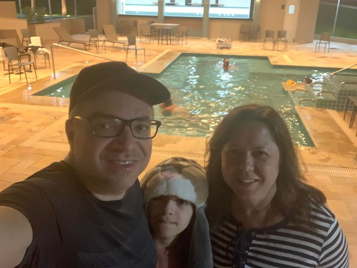

About me
Hi! My name is Erika Guirro, forty-nine years old. I'm from São Paulo, Brazil. I love the city of São Paulo. I live here since 2003. In this photo are my husband, Marcos Guirro, my daughter, Camila, and me. I also have a cat.
I graduated in Computer Science from Unicamp in 1998. Now I'm recycling my studies and learning English too. I love my family, the gospel, the temples, and I am so excited to learn more in this course. I worked as a systems analyst since 1998, in banks (Itaú, Sumitomo) and now I'm working at Quadra Softworks.